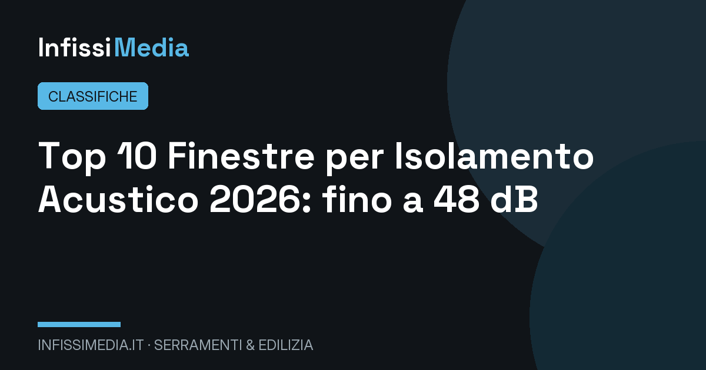

La finestra con il miglior isolamento acustico del 2026 è Internorm KF 520 con vetro acustico, che raggiunge un potere fonoisolante Rw fino a 46-48 dB. Seguono Finstral e Schüco, entrambe oltre i 45 dB. Il sovrapprezzo per il vetro acustico è indicativamente di 80-150 €/m².
In sintesi
- Il potere fonoisolante Rw misura i decibel abbattuti dalla finestra: una standard vale 30-33 dB, una acustica arriva a 44-48 dB.
- Il segreto è il vetro: lastre asimmetriche di spessori diversi con pellicola PVB acustica.
- Il DPCM 5/12/1997 fissa per le camere un requisito di facciata che le finestre standard spesso non garantiscono in centro città.
- Ogni +3 dB di Rw percepito corrisponde a una riduzione quasi dimezzata del rumore percepito.
- Sovrapprezzo indicativo per il vetro acustico: 80-150 €/m² rispetto al triplo vetro standard.
Il rumore è l'inquinante più sottovalutato delle nostre case: l'Organizzazione Mondiale della Sanità raccomanda per le camere da letto livelli notturni sotto i 30-35 dB, ma in una via trafficata si superano facilmente i 65-70 dB esterni. Con una finestra standard da 30-32 dB di abbattimento, in camera ne arrivano ancora 35-40: troppi per dormire bene. La differenza tra una finestra qualunque e una finestra acustica si misura in qualità della vita.
Il parametro di riferimento è il potere fonoisolante Rw, espresso in decibel e misurato in laboratorio secondo la serie UNI EN ISO 10140: indica di quanti dB la finestra riduce il rumore che la attraversa. Attenzione: il valore che conta è quello della finestra completa (telaio + vetro + guarnizioni), non del solo vetro, e spesso riportato con gli indici di adattamento spettrale C e Ctr per il rumore di traffico.
Per questa Top 10 abbiamo raccolto i valori Rw massimi certificati dai produttori sui sistemi venduti in Italia, verificando la dotazione vetraria necessaria per raggiungerli. Come sempre, la posa è decisiva: un giunto perimetrale non sigillato acusticamente può azzerare il vantaggio di un vetro da 48 dB, come spieghiamo nella guida alla posa in opera qualificata UNI 11673.
La classifica: le 10 finestre più silenziose del 2026
Internorm KF 520 — fino a 48 dB, il silenzio di riferimento
Il sistema di punta austriaco, con triplo vetro acustico asimmetrico (tipicamente 8-4-6 mm con PVB fonoassorbente) e tripla guarnizione perimetrale, dichiara Rw fino a 46-48 dB a seconda della vetratura: il valore più alto rilevato nella nostra indagine. La tecnologia I-tec con vetratura fissata a filo anta migliora la tenuta acustica del nodo vetro-profilo.
Prezzi indicativi 650-1.000 €/m² con vetro acustico. È la scelta per chi abita su arterie trafficate, vicino a ferrovie o aeroporti e non accetta compromessi sul riposo.
- Rw fino a 46-48 dB, il massimo rilevato
- Tripla guarnizione di serie
- Vetro acustico abbinato a Uw 0,62
- Prezzo nella fascia più alta
- Vetro acustico pesante: ante da verificare
Finstral FIN-Project — 46 dB con vetro di filiera
Producendo il vetro internamente, Finstral controlla direttamente le stratifiche acustiche: il FIN-Project con triplo vetro fonoisolante raggiunge Rw fino a 45-46 dB, mantenendo la ferramenta a scomparsa e un ottimo isolamento termico. Il canalino silenzioso e le guarnizioni coestruso completano un pacchetto acustico molto curato.
Prezzi indicativi 550-850 €/m² con vetratura acustica. La rete di showroom diretti permette di ascoltare dal vivo le differenze di abbattimento: molti punti vendita hanno camere dimostrative.
- Vetro acustico prodotto in casa
- Rw fino a 45-46 dB certificati
- Dimostrazioni acustiche in showroom
- Configurazione top solo su alcune serie
- Listino variabile tra showroom
Schüco LivIng e AWS — 45-47 dB di precisione tedesca
Schüco dichiara per i sistemi LivIng (PVC) e AWS (alluminio) valori Rw fino a 45-47 dB con vetrate acustiche dedicate, grazie a guarnizioni saldate e profili ad alta rigidità che non trasmettono vibrazioni. Il catalogo tecnico riporta i valori per combinazione di vetro, un dettaglio che i progettisti acustici apprezzano.
Prezzi indicativi 500-950 €/m² con vetro acustico. Consigliato soprattutto per grandi superfici in alluminio, dove la rigidità del profilo pesa molto sul risultato finale.
- Rw documentato per ogni vetratura
- Ottimo su grandi ante in alluminio
- Guarnizioni saldate, tenuta duratura
- Prezzo premium
- Vetro acustico quasi sempre optional
Veka Softline 82 — 45 dB con il profilo profondo
La profondità di 82 mm del sistema Veka consente vetri fino a 52 mm: lo spazio necessario per stratificati acustici spessi con camere differenziate, che riducono la risonanza. Con triplo vetro asimmetrico PVB si raggiungono Rw fino a 44-45 dB, a prezzi indicativi di 420-700 €/m² presso i serramentisti trasformatori.
È la via più economica tra le prime quattro per superare i 42 dB: la qualità finale, come sempre, dipende dalla cura del trasformatore nella sigillatura.
- Ospita vetri fino a 52 mm
- Miglior prezzo per 44+ dB
- Ampia rete di trasformatori
- Risultato legato al serramentista
- Vetro acustico da specificare esplicitamente
Oknoplast Prolux — 43-45 dB, silenzio e design
Il sistema di punta polacco con triplo vetro acustico raggiunge Rw 43-45 dB, valore più che sufficiente per la maggior parte dei contesti urbani. Il profilo multicomponente e la tripla guarnizione (su alcune serie) aiutano la tenuta perimetrale, spesso il punto debole delle finestre economiche.
Prezzi indicativi 450-700 €/m² con vetratura acustica. La capillarità della rete semplifica la gestione di un eventuale test acustico post-posa.
- Ottimo equilibrio prezzo/prestazioni acustiche
- Tripla guarnizione su serie top
- Rete capillare
- Valori top solo con vetro specifico
- Attenzione alle versioni base a doppia guarnizione
Reynaers MasterLine 8 — 43-46 dB per le grandi vetrate
Sul fronte delle grandi superfici in alluminio, il sistema belga raggiunge Rw 43-46 dB con vetrate acustiche stratificate: prestazioni notevoli considerando i profili minimi. È il riferimento per ville e attici con ampie vetrate esposte al rumore. Prezzi indicativi 700-1.300 €/m² con vetratura acustica.
Metra NC 75 — 42-44 dB, l'alluminio italiano silenzioso
Il sistema veneto a taglio termico dichiara Rw fino a 42-44 dB con vetro acustico stratificato: un buon risultato per l'alluminio, materiale che trasmette più vibrazioni del PVC. La cura delle guarnizioni e dei nodi di giunzione è il punto forte della filiera italiana. Prezzi indicativi 550-950 €/m².
Aluprof MB-86 — 42-45 dB certificati per il contract
Molto usato in hotel e uffici, dove l'acustica è disciplinata da capitolati, il sistema Aluprof offre Rw certificati fino a 42-45 dB a seconda della vetratura. La documentazione tecnica per combinazione è tra le più complete: utile quando serve una relazione acustica formale. Prezzi indicativi 600-1.000 €/m².
Ponzio PE78N — 41-43 dB, solidità e prezzo equilibrato
Lo storico marchio piemontese raggiunge Rw 41-43 dB con vetro stratificato acustico: la scelta giusta per contesti urbani medi, senza le esigenze estreme di una ferrovia sotto casa. Prezzi indicativi 500-800 €/m², con il vantaggio di una rete di serramentisti che conosce bene il sistema.
Drutex Iglo Energy — 40-43 dB, il silenzio economico
Chiude la classifica il sistema polacco, che con triplo vetro acustico raggiunge Rw 40-43 dB a prezzi indicativi di 350-550 €/m²: la soglia dei 40 dB, sufficiente per trasformare una strada rumorosa in un sottofondo accettabile, diventa così accessibile anche ai budget più attenti.
Tabella comparativa: decibel abbattuti e prezzi
| Sistema | Rw max (dB) | Vetratura acustica | Prezzo indicativo (€/m²) | Contesto ideale |
|---|---|---|---|---|
| Internorm KF 520 | 46–48 | Triplo asimmetrico PVB | 650–1.000 | Ferrovie, aeroporti, arterie |
| Finstral FIN-Project | 45–46 | Triplo PVB di filiera | 550–850 | Centro urbano trafficato |
| Schüco LivIng/AWS | 45–47 | Stratificato acustico | 500–950 | Grandi ante e contract |
| Veka Softline 82 | 44–45 | Triplo fino a 52 mm | 420–700 | Rapporto prezzo/silenzio |
| Oknoplast Prolux | 43–45 | Triplo asimmetrico | 450–700 | Città, fascia media |
| Reynaers MasterLine 8 | 43–46 | Stratificato su misura | 700–1.300 | Vetrate di pregio |
| Metra NC 75 | 42–44 | Stratificato PVB | 550–950 | Alluminio in città |
| Aluprof MB-86 | 42–45 | Secondo capitolato | 600–1.000 | Hotel, uffici, contract |
| Ponzio PE78N | 41–43 | Stratificato acustico | 500–800 | Contesti urbani medi |
| Drutex Iglo Energy | 40–43 | Triplo acustico | 350–550 | Budget contenuti |
Nota metodologica: i valori Rw indicati sono i massimi certificati su finestra di riferimento con la vetratura acustica specifica; il valore effettivo dipende da dimensioni e configurazione. Prezzi indicativi rilevati a luglio 2026, posa esclusa.
Come scegliere la finestra acustica giusta: quanti dB ti servono
La formula semplice per il tuo contesto
Misura o stima il rumore esterno: una strada urbana trafficata vale 65-75 dB, una ferrovia a 50 metri può superare gli 80 dB. Per dormire servono 30-35 dB interni: significa un abbattimento richiesto di 35-45 dB. In centro città servono quindi finestre da almeno 38-42 dB; vicino a ferrovie e aeroporti, da 44 in su.
Perché il vetro asimmetrico con PVB fa la differenza
Due lastre di vetro dello stesso spessore vibrano insieme alla stessa frequenza e lasciano passare il rumore: è l'effetto risonanza. Le vetrature acustiche usano lastre di spessori diversi (per esempio 8 e 4 mm) unite da pellicole PVB fonoassorbenti che smorzano le vibrazioni. Così un triplo vetro acustico supera di 5-8 dB un triplo standard.
Attenzione agli indici C e Ctr
Il valore Rw è misurato su uno spettro standard; per il rumore di traffico conta di più l'indice Ctr, tipicamente negativo di 3-5 dB. Una finestra da Rw 45 (-1; -4) vale quindi 41 dB contro il traffico: verificate sempre la dicitura completa in scheda tecnica, soprattutto per strade e ferrovie.
Norma acustica edilizia e bonus: cosa sapere nel 2026
Il DPCM 5/12/1997 e i requisiti di facciata
Il DPCM sui requisiti acustici passivi fissa per le facciate di camere e soggiorni un potere fonoisolante apparente minimo di 40 dB. Poiché la finestra è l'elemento più debole della facciata, in pratica nelle zone rumorose servono serramenti da 40+ dB per rispettare il requisito, specie negli edifici nuovi o nelle ristrutturazioni con collaudo acustico.
Posa e cassonetto: gli anelli deboli
Il rumore passa dai giunti: il perimetro tra telaio e muro va sigillato con materiali fonoelastici, e il cassonetto delle tapparelle — spesso dimenticato — può vanificare 10 dB di vetro. Esistono cassonetti coibentati acusticamente e sistemi con frangisole integrato che risolvono il problema, come quelli trattati nella nostra guida ai produttori di tapparelle e frangisole.
Si può detrarre la finestra acustica?
Se la sostituzione migliora anche la trasmittanza sotto i limiti del decreto — cosa quasi sempre vera per i sistemi di questa classifica — l'intervento rientra nel bonus serramenti 2026 al 50%, vetro acustico compreso. Il requisito è energetico, non acustico: controllate il valore Uw in fattura.
Domande frequenti sull'isolamento acustico delle finestre
Qual è la finestra con il miglior isolamento acustico del 2026?
Secondo la classifica Infissi Media 2026, la finestra più silenziosa è Internorm KF 520 con vetro acustico asimmetrico, che raggiunge un potere fonoisolante Rw di 46-48 dB. Seguono Finstral FIN-Project (45-46 dB) e Schüco LivIng/AWS (45-47 dB). Per un contesto urbano medio sono sufficienti 40-42 dB.
Quanti decibel deve abbattere una buona finestra antirumore?
Dipende dal contesto: per una via cittadina trafficata (65-70 dB esterni) servono almeno 38-42 dB di Rw per avere 30 dB in camera; vicino a ferrovie o aeroporti servono 44-48 dB. Una finestra standard si ferma a 30-33 dB, spesso insufficienti in centro.
Come funziona il vetro acustico delle finestre?
Il vetro acustico combina lastre di spessori diversi (per esempio 8 e 4 mm) unite da pellicole in PVB fonoassorbente. Gli spessori asimmetrici evitano che le lastre vibrino alla stessa frequenza, mentre il PVB smorza le vibrazioni residue: il risultato è un abbattimento superiore di 5-8 dB rispetto a un vetro standard di pari spessore.
Quanto costa una finestra con isolamento acustico?
Il vetro acustico aggiunge indicativamente 80-150 €/m² al prezzo della finestra. Una finestra completa con Rw superiore a 42 dB costa in media 450-900 €/m² a seconda del materiale, posa esclusa. Se il serramento rispetta i limiti di trasmittanza, l'intervento rientra nel bonus 50% del 2026.